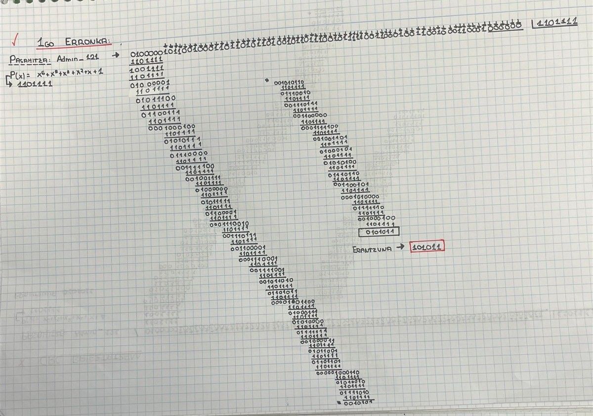
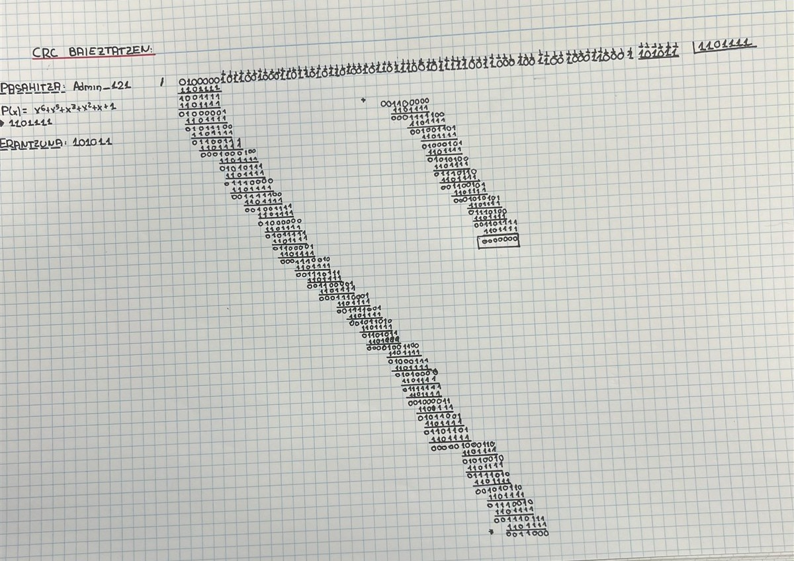
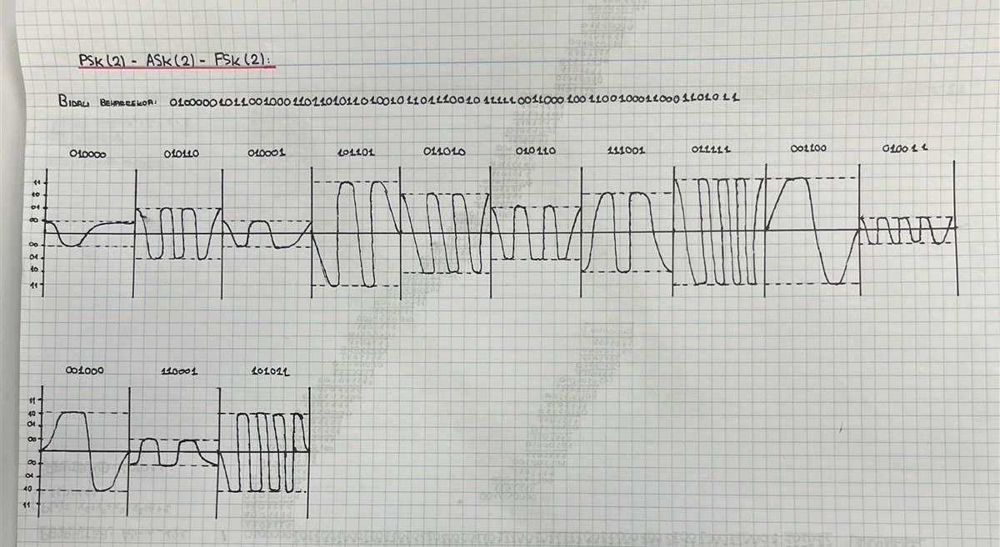
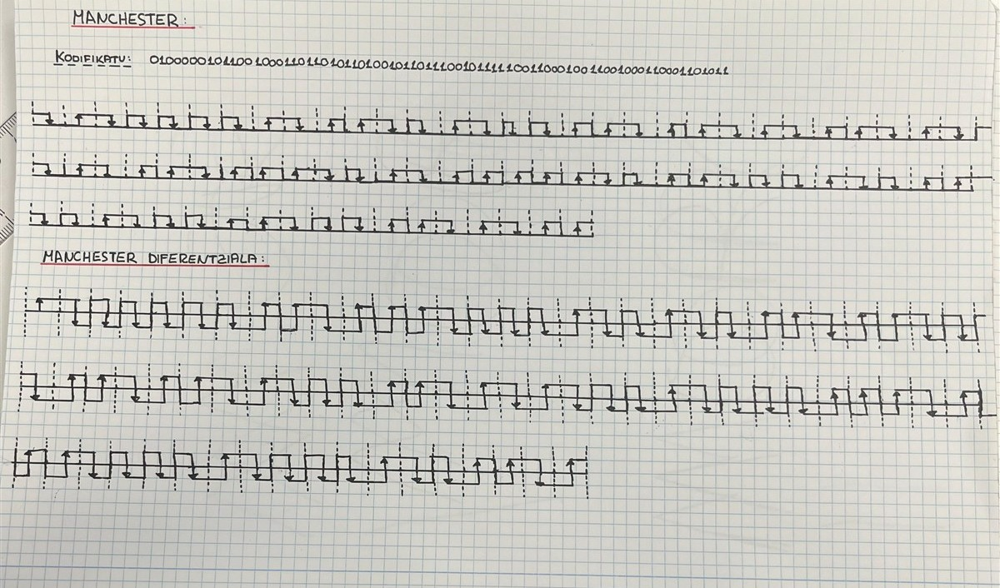

Sare Azpiegitura Fisikoa eta Seinaleak
Ikasgelako rack-ean kableatu egituratuaren muntaia (T568B), OSI 1-2 geruzen analisia, Admin_121 pasahitzaren ASCII kodeketa, CRC-6-GSM erroreen kontrola eta konexio probak.
1. OSI Ereduaren 1. eta 2. Geruzak
1. Geruza: Fisikoa (Physical Layer)
Bit-sekuentziak seinale elektriko moduan garraiatzen ditu kobrean zehar:
- Bitartekoa: UTP Cat 6 kableatua (4 pare bihurritu).
- Konektoreak: RJ-45 arrak eta patch-paneleko keystone emeak.
2. Geruza: Datu-Lotura (Data Link Layer)
Sare lokaleko tramen antolaketa eta helbideratze fisikoa kudeatzen ditu:
- Helbideratzea: MAC helbideak (zerbitzaria:
52:54:00:1e:ab:f1). - Gailua: 2. geruzako switch-a (talka-domeinuak banatzeko).
2. Admin_121 Pasahitzaren ASCII eta CRC-6 Kalkulua
Sistemako probako pasahitza (Admin_121) ASCII formatura pasatuta. 9 karaktere, 72 bit:
| Karakterea | Hamartarra | Bitarra (8 bit) | Hex |
|---|---|---|---|
| A / d / m | 65 / 100 / 109 | 01000001 01100100 01101101 | 0x41 / 0x64 / 0x6D |
| i / n / _ | 105 / 110 / 95 | 01101001 01101110 01011111 | 0x69 / 0x6E / 0x5F |
| 1 / 2 / 1 | 49 / 50 / 49 | 00110001 00110010 00110001 | 0x31 / 0x32 / 0x31 |
CRC-6-GSM Polinomio sortzailea: G(x) = x^6 + x^5 + x^3 + x^2 + x + 1 (Bitarrean: 1101111)
Kalkulua: 72 biteko mezuari 6 zero gehitu eta modulo-2 XOR zatiketa egin da (78 bit guztira).
Egiaztapena: mezuari hondarra (101011) gehituta zatiketak 000000 ematen du, beraz marko osoa zuzena da.
CRC kalkulua

Erantzuna 101011
CRC baieztapena

Hondarra 000000
3. Seinale Modulazioak eta Manchester
Marko osoa (78 bit: 72 bit mezua + 6 bit CRC) 6 biteko 13 bloketan banatuta dago, eta bloke bakoitza seinale bihurtu da:


ASK (2)
Anplitudearen aldaketa bitaren arabera ('1' altua, '0' baxua).
FSK (2)
Maiztasunaren aldaketa ('1' maiztasun handia, '0' baxua).
PSK (2)
Fasearen aldaketa 180 gradu bit-aldaketetan (zarata aurrean sendoa).
Manchester
Tentsio-trantsizioa bit bakoitzaren erdian sinkronizaziorako.